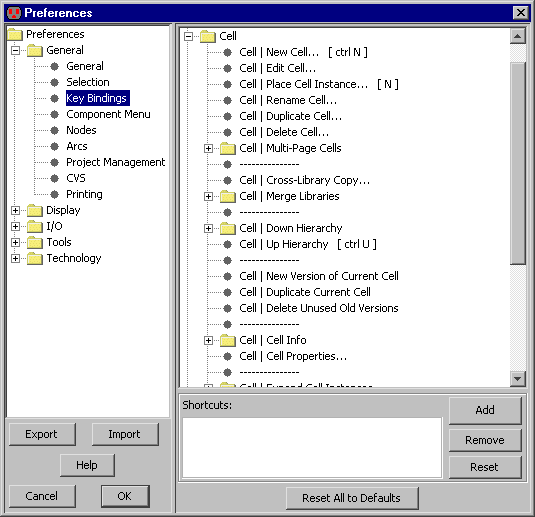

Many common commands can be invoked by typing "quick keys" for them.
These quick keys are shown in the pulldown menus next to the item.
For example, the New Cell... command (in menu Cell) has the quick key "Control-N".
On the Macintosh, the menu shows " N",
indicating that you must hold the command key while typing the "N";
on Windows and UNIX systems, the menu shows "Ctrl-N",
indicating that you must hold the Control key while typing "N".
There are also unshifted quick keys (for example,
the letter "n" runs the Place Cell Instance command). N",
indicating that you must hold the command key while typing the "N";
on Windows and UNIX systems, the menu shows "Ctrl-N",
indicating that you must hold the Control key while typing "N".
There are also unshifted quick keys (for example,
the letter "n" runs the Place Cell Instance command).
|  |
To change the bindings of quick keys,
use the Key Bindings Preferences (in menu File / Preferences..., "General" section, "Key Bindings" tab).
The dialog shows the hierarchical structure of the pulldown menus on the top,
and lets you add or remove key bindings in the bottom area.
You can remove a quick key binding with the "Remove" button,
and you can add a quick key binding with the "Add" button.
The "Reset" button restores default quick key bindings.
Change key bindings with caution, because it customizes your user interface,
making it more difficult for other users to work at your computer.
You can get to EVERY menu command with key sequences.
The keys to use are underlined in the menus.
For example, the File menu has the "F" underlined, and the Print...
command of that menu has the "P" underlined.
This means that you can hold the Alt key and type "FP" to issue the print command.
Here are the current key bindings (use the Show Key Bindings command in menu Help to see the current set):